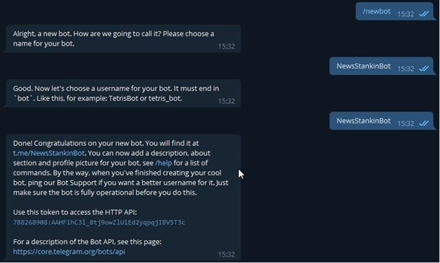
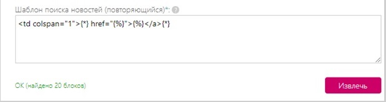
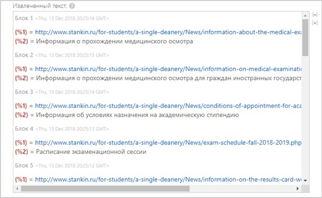
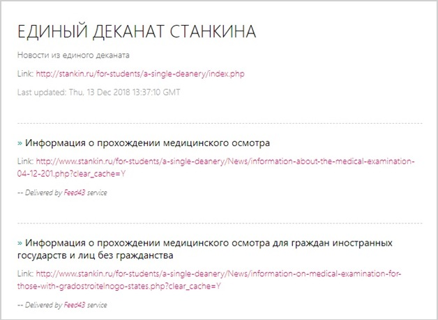
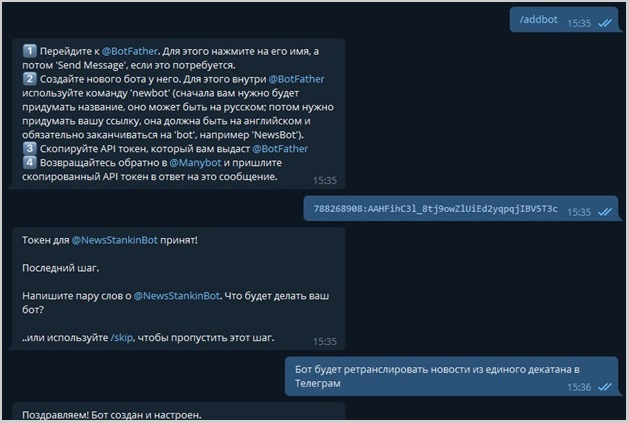
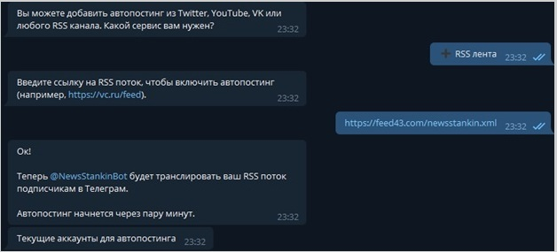
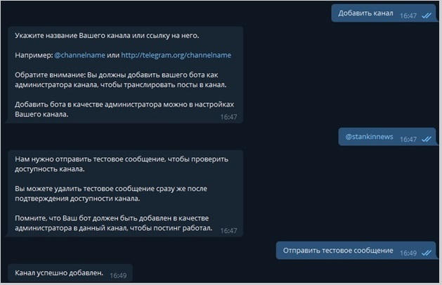

Шамшина Ксения
Студентка группы ИДМ-18-05
В курсе ИТ предусматривается реализация трех лабораторных работ:
- Лабораторная работа №1 "Экосистема разработки программ с открытым кодом"
- Лабораторная работа №2 "Разработка простого веб-приложения"
- Лабораторная работа №3 "Настройка локальной сети передачи данных"
Для получения ПЕРВОГО МОДУЛЯ мною были сделаны следующие отчеты:
- Отчет №1 "Экосистема разработки программ с открытым кодом" (см. вкладку выше ЛАБОРАТОРНАЯ РАБОТА 1)
- Отчет №2 "Настройка локальной сети передачи данных" (см. вкладку выше ЛАБОРАТОРНАЯ РАБОТА 3)
- Лабораторная работа №2 "Разработка простого веб-приложения"
- Подготовка к экзамену
"Экосистема разработки программ с открытым кодом"
Цель работы: Создание персональной страницы-отчета на github и работа с git.Ход работы
- Создать персональную веб-страниицу
- Загрузить персональную веб страницу-отчет в репозиторий ИДМ-18 по курсу "Интернет-технологии" на GitHub.
"РАЗРАБОТКА ПРОСТОГО ВЕБ-ПРИЛОЖЕНИЯ"
Задачи, которые необходимо было решить, для достижения цели:
- Зарегистрировать Telegram-бота с помощью @BotFather.
- Адаптировать ленту новостей единого деканата под RSS-формат.
- Настроить функционал созданного Telegram-бота при помощи @Manybot.
- Подсоединить адаптированный вариант новостей университета к Telegram-боту.
- Подключить бота к Telegram-каналу для удобного взаимодействия с ним студентов.
1. Регистрация бота. На скриншоте показано взаимодействие с @BotFather (скриншот 1).
Скриншот 1

2. Для адаптирования ленты новостей единого деканата под RSS-формат был использован сервис Feed43.com (скриншот 2), который позволил проанализировать HTML-код сайта stankin.ru и преобразовать его (скриншот 3) под формат (скриншот 4), который бы легко воспринял Telegram-бот (скриншот 5).
Скриншот 2

Скриншот 3

Скриншот 4

Скриншот 5

3. Настройка функционала Telegram-бота (скриншот 6).
Скриншот 6

4. Подсоединение обновлённой ленты новостей к Telegram-боту (скриншот 7).
Скриншот 7

5. Добавление бота на Telegram-канал (скриншот 8).
Скриншот 8

"НАСТРОЙКА ЛОКАЛЬНОЙ СЕТИ ПЕРЕДАЧИ ДАННЫХ"
Задание на лабораторную работу
- Разместить на рабочем поле коммутатор и два компьютера и соединить их
- Подключить консольный кабель для настройки оборудования
- Настроить адресацию на добавленных компьютерах согласно таблице ниже без шлюза по умолчанию
- Выполнить проверку работоспособности сети
- Добавить на рабочее поле еще один коммутатор с двумя компьютерами и настроить адресацию из другой подсети
- Соединить коммутаторы между собой и проверить работоспособность сети
- Добавить маршрутизатор на рабочее поле
- Настроить интерфейсы маршрутизатора для существующих подсетей
- Проверить работоспособность сети
- Указать шлюз по умолчанию и отправить сообщение
- Добавить на рабочее поле еще один маршрутизатор
- Подключить к нему коммутатор и компьютер
- Настроить сетевые настройки согласно таблице ниже
- Соединить между маршрутизаторы и настроить между ними сеть с префиксом /30
- Проверить работоспособность сети, отправив сообщение сети A в сеть С и из сети В в сеть С
- Настроить статическую маршрутизацию между сетями
- Настроить на сетевых устройствах пароли для привилегированного режима
- Настроить пароли на сетевых устройствах пароли на подключение через консоль и telnet
- Установить баннер на сетевое оборудование
- Проверить работу удаленного подключения
Ход работы
- Рассчитаем IP-адреса согласно выбранному варианту
- Разместим два компьютера и коммутатор,настроить между ними адресацию. Убедиться, что все работает
- Добавим еще коммутатор с двумя компьютерами и маршрутизаторы. Проведем необходимые настройки и проверим работоспособность

- Настроим статическую маршрутизацию при помощи следующих команд:
Команды привилегированного режима // router#
- show ip route – выводит таблицу маршрутизации;
- show ip protocols – выводит расширенную информацию об используемых протоколах маршрутизации.
Команды режима глобального конфигурирования // router(config)#
- ip route [сеть назначения] [маска] [маршрут] – добавляет в таблицу маршрутизации статический маршрут до указанной сети назначения. Маршрут может быть задан в виде исходящего интерфейса и/или (предпочтительно!) адреса next hop (IP-адреса входящего интерфейса следующего маршрутизатора на маршруте).
- Установим банер на сетевое оборудование:
- Проверим работу.
- Banner motd [баннер] – определяет баннерное сообщение.
ВЫВОД
Все задачи, поставленные в лабораторной работе, выполнены.
"ПОДГОТОВКА К ЭКЗАМЕНУ"
Экзаменационный билет №3
Вопрос 1: Понятия интернета, интранета, браузера. Обязанности провайдеров услуг интернета
Интернет (от англ. inter — «между» и net — «сеть, паутина») представляет собой совокупность компьютерных сетей, связывающих военные, правительственные, образовательные, коммерческие институты, а также отдельных граждан. Интернет является организацией с полностью добровольным участием и управляется сообществом представителей от пользователей сети, которое называется ISOC (Internet Society), предоставляющим организационную основу для разных исследовательских и консультационных групп, занимающихся развитием Интернета.
Интранет (англ. Intranet, также употребляется термин интрасеть) — в отличие от Интернета, это внутренняя частная сеть организации или крупного государственного ведомства. Как правило, интранет — это Интернет в миниатюре, который построен на использовании протокола IP для обмена и совместного использования некоторой части информации внутри этой организации. Это могут быть списки сотрудников, списки телефонов партнёров и заказчиков. Чаще всего в разговорной речи под этим термином имеют в виду только видимую часть интранет — внутренний веб-сайт организации. Основанный на базовых протоколах HTTP и HTTPS и организованный по принципу клиент-сервер, интранет-сайт доступен с любого компьютера через браузер. Таким образом, интранет — это «частный» Интернет, ограниченный виртуальным пространством отдельно взятой организации. Intranet допускает использование публичных каналов связи, входящих в Internet, (VPN), но при этом обеспечивается защита передаваемых данных и меры по пресечению проникновения извне на корпоративные узлы.
Бра́узер, или веб-обозреватель — прикладное программное обеспечение для просмотра веб-страниц, содержания веб-документов, компьютерных файлов и их каталогов; управления веб-приложениями; а также для решения других задач. В глобальной сети браузеры используют для запроса, обработки, манипулирования и отображения содержания веб-сайтов. Многие современные браузеры также могут использоваться для обмена файлами с серверами FTP, а также для непосредственного просмотра содержания файлов многих графических форматов (gif, jpeg, png, svg), аудио-видео форматов (mp3, mpeg), текстовых форматов (pdf, djvu) и других файлов.
Правовые основы деятельности в области связи на территории Российской Федерации, а также права и обязанности лиц, участвующих в указанной деятельности или пользующихся услугами связи, в первую очередь определяет Федеральный закон от 7 июля 2003 г. № 126-ФЗ «О связи». Рассмотрим основные понятия: Услуга связи - деятельность по приему, обработке, хранению, передаче, доставке сообщений электросвязи или почтовых отправлений. Пользователь услугами связи - лицо, заказывающее и (или) использующее услуги связи. Абонент - пользователь услугами связи, с которым заключен договор об оказании таких услуг при выделении для этих целей абонентского номера или уникального кода идентификации. Оператор связи - юридическое лицо или индивидуальный предприниматель, оказывающие услуги связи на основании соответствующей лицензии. Правоотношения между гражданами-абонентами услуг связи и операторами связи по поводу предоставления услуг доступа к информационным системам информационно - телекоммуникационных сетей, в том числе к сети Интернет, регулируются Правилами оказания телематических услуг связи, утвержденными постановлением Правительства Российской Федерации от 10 сентября 2007 № 575. Оператор связи (Интернет-провайдер) обязан доводить до потребителя необходимую для заключения и исполнения договора информацию, включающую в себя:
- наименование (фирменное наименование) оператора связи, перечень его филиалов, места их нахождения и режим работы;
- реквизиты выданной провайдеру лицензии на осуществление деятельности в области оказания услуг связи (далее - лицензия) и лицензионные условия;
- состав Интернет услуг, условия и порядок их оказания, в том числе используемые абонентские интерфейсы;
- диапазон значений показателей качества обслуживания, обеспечиваемых сетью передачи данных, в пределах которого абонент вправе установить в договоре необходимые ему значения;
- перечень и описание преимуществ и ограничений в оказании Интернет услуг;
- тарифы на Интернет услуги;
- порядок, форма и тарифные планы для оплаты Интернет услуг;
- номера телефонов системы информационно-справочного обслуживания и унифицированный указатель информационной системы провайдера;
- перечень услуг, технологически неразрывно связанных с Интернет услугами и направленных на повышение их потребительской ценности;
- перечень мест, где абонент и (или) пользователь могут в полном объеме ознакомиться с Правилами оказания телематических услуг связи, утвержденными постановлением Правительства Российской Федерации от 10 сентября 2007 № 575;
- перечень принимаемых на добровольной основе дополнительных обязательств провайдера перед абонентом и (или) пользователем.
Вопрос 2: Основные синтаксические конструкции языка JavaScript. Особенности использования динамической типизации.
Основные синтаксические конструкции языка JavaScript:
break - завершает текущий цикл или конструкции switch и label и передает управление на следующий вызов
continue - прекращает текущую итерацию цикла и продолжает выполнение со следующей итерации
do..while - задает цикл с проверкой условия после каждой итерации
for - cоздать цикл, указав начальное состояние, условие и операцию обновления состояния
for..in - gеребрать свойства объекта, для каждого свойства выполнить заданный код
function - объявить функцию
if - выполняет тот или иной блок кода в зависимости от того, верно ли условие
label - указать идентификатор для использования в break и continue
return - возвратить результат работы функции
switch - сравнивает значение выражения с различными вариантами и при совпадении выполняет соответствующий код
throw - инициировать("бросить") исключение
try..catch - ловить все исключения, выпадающие из блока кода
var - объявить переменную (или несколько) в текущей области видимости
while - задает цикл, который выполняется до тех пор, пока условие верно. Условие проверяется перед каждой итерацией.
with - добавить новую область видимости
Блок - группировка javascript-вызовов внутри фигурных скобок
Динамическая типизация — приём, широко используемый в языках программирования и языках спецификации, при котором переменная связывается с типом в момент присваивания значения, а не в момент объявления переменной. Таким образом, в различных участках программы одна и та же переменная может принимать значения разных типов. Примеры языков с динамической типизацией — Smalltalk, Python, Objective-C, Ruby, PHP, Perl, JavaScript, Lisp, xBase, Erlang, Visual Basic. Противоположный приём — статическая типизация. В некоторых языках со слабой динамической типизацией стоит проблема сравнения величин, так, например, PHP имеет операции сравнения «==», «!=» и «===», «!==», где вторая пара операций сравнивает и значения, и типы переменных. Операция «===» даёт true только при полном совпадении, в отличие от «==», который считает верным такое выражение: (1=="1"). Стоит отметить, что это проблема не динамической типизации в целом, а конкретных языков программирования.
Преимущества
- Упрощается написание несложных программ, например, скриптов.
- Облегчается работа прикладного программиста с СУБД, которые принципиально возвращают информацию в «динамически типизированном» виде. Поэтому динамические языки ценны, например, для программирования веб-служб.
- Иногда требуется работать с данными переменного типа. Например, функция поиска подстроки возвращает позицию найденного символа (число) или маркер «не найдено». В PHP этот маркер — булевое false. В языках со статической типизацией это особая константа (0 в Паскале, std::string::npos в C++).
Недостатки
- Статическая типизация позволяет уже при компиляции заметить простые ошибки «по недосмотру». Для динамической типизации требуется как минимум выполнить данный участок кода.
- В объектно-ориентированных языках не действует, либо действует с ограничениями, автодополнение: трудно или невозможно понять, к какому типу относится переменная, и вывести набор её полей и методов.
- Развитая статическая система типов (такая как Хиндли-Милнер) играет значительную роль в самодокументировании программы; динамическая типизация по определению не проявляет этого свойства, что затрудняет разработку структурно сложных программ.
- Снижение производительности из-за трат процессорного времени на динамическую проверку типа, и излишние расходы памяти на переменные, которые могут хранить «что угодно». К тому же большинство языков с динамической типизацией интерпретируемые, а не компилируемые.